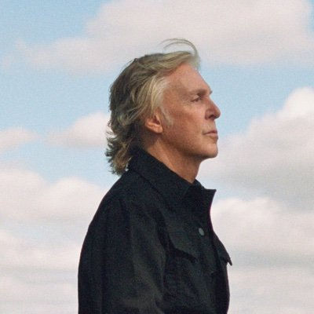
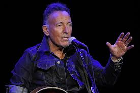

A celebration of music and vocals featuring some of the best artists on the globe,let us pull together and come together in this covid secure event to raise money for the world's poorest and help make our world a better place.
2021.04.09(THU) ~ 10(FRI)
2021.04.09(THU) ~ 10(FRI)
@ National Exhibition Centre,Martson Green,Birmingham UK.
@ National Exhibition Centre,Martson Green,Birmingham UK.
Main Program
Main Program

Lectures
Explore our intriguing exhibition where you can find music instruments of
up to 2000 years old.

Karaoke
play and sing the greatest songs ever with our great musicans and fill your heart
with joy.
connect
connect with music lovers alike and find new friends to share your music passion with.

exhebition
Explore our intriguing exhibition where you can find music instruments of
up to 2000 years old.
Forum
share your thoughts and opnion with the community and our well knowledgeable
experts.
Featured Artists
Featured Artists


Paul Mccartney
English singer, songwriter, musician, and record
and film producer
Gained worldwide fame as co-lead vocalist and bassist for the Beatles

Bruce Springsteen
American singer, songwriter, and musician.
Received critical acclaim and attained worldwide fame upon the release of Born to Run in 1975.
MORE

Billy Joel
An american musician, singer-songwriter, and composer
having released 12 studio albums from 1971 to 1993.
Tina turner
Singer, songwriter, dancer, and actress.
Began her recording career with Ike Turner's Kings of Rhythm.
Robbie Williams
An English singer-songwriter and entertainer.
Eleven out of his twelve studio albums have reached number one in the UK.

Taylor swift
Her narrative songwriting,often takes inspiration from her personal life.
Born in West Reading, Pennsylvania, Swift relocated to
Nashville, Tennessee, in 2004 to pursue a career
in country music.